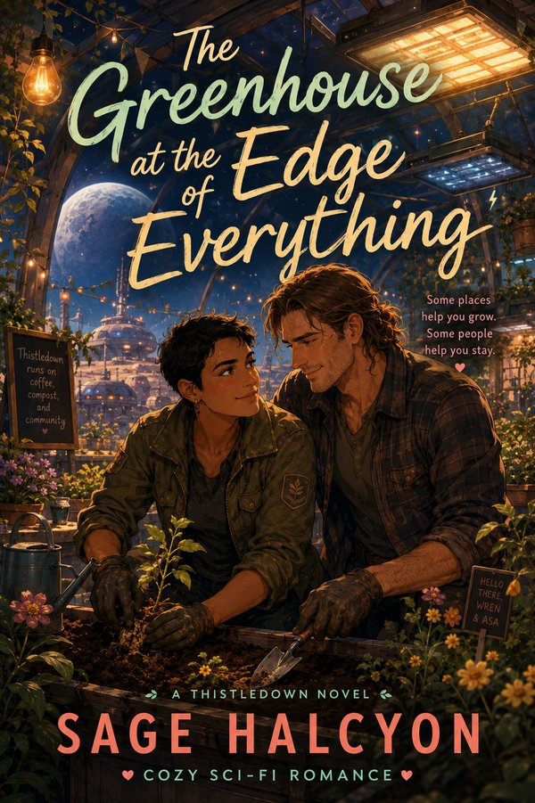

The Greenhouse at the Edge of Everything
Wren learns that safety can look less like mapped exits and more like soil under her nails, especially when Asa Devereux and a failing dome system refuse to fit any protocol she knows.
slow burnfound familysecond chances